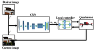
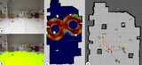

|
Research Interests
I am interested in Artificial Intelligence, Computer Vision, Machine Learning, Statistics and Optimization. I have also worked on Protein Structure Prediction and Cancer Genomics.
|
|

|
Exploring Convolutional Networks for End-to-End Visual Servoing
Aseem Saxena, Harit Pandya, Gourav Kumar, K. Madhava Krishna
IEEE ICRA, 2017 (Accepted)
video
We present an end-to-end learning based approach for visual servoing in diverse scenes where the knowledge of camera parameters and scene geometry is not available apriori. This is achieved by training a convolutional neural network over color images with synchronised camera poses.
|
|  |
Guess from Far, Recognize when Near: Searching the
Floor for Small Objects
M Siva Karthik, Sudhanshu Mittal, K. Madhava Krishna, ICVGIP 2014
video
Object recognition is achieved using 3-D Point Cloud data from Kinect sensors and constructing a Bag of Words Model on it. It is trained using a Support Vector Machine Classifier. Object Detection is achieved using segmentation of 2-D images by Markov Random Fields. The implementation is done on a Turtlebot with a Kinect Sensor mounted on top of it.
|
|
|
Deep Learning for Table Interest Point Detection
Aseem Saxena
I attempt to find interest points or corner points of tables in a scene using cues from
semantic segmentation and vanishing lines. Availabilty of semantic information such as
interest points can help mobile robots navigate in a better way.
|
|
|
Automating GrabCut for Multilabel Image Segmentation
Aseem Saxena
Performing Image Segmentation for 3 labels without user guidance by learning a GMM
for each label and performing alpha expansion algorithm using MRF2.2 Library.
|
Shamelessly copied from
this
|
|